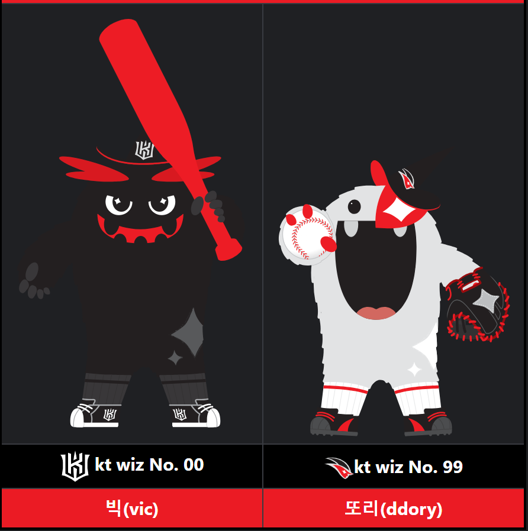

야구단 이름 : KT 위즈(kt wiz)
요약 설명
KT가 운영하는 KBO 리그 프로 야구단
연고지는 경기도 수원시, 홈구장은 장안구 조원동에 위치한 수원종합운동장 내의 수원 케이지 위즈 파크
2014년 시즌 KBO 퓨처스리그 참가를 시작으로 2015년 시즌부터 정식으로 1군 KBO 리그에 참가했다.
리그 역사상 12번째 창단된 구단으로 출범 이후 33년 만인 2015년 역대 4번째 신생 구단으로 가입해 리그 10구단 체제를 시작했다.
KT 위즈 구단 설명
1. 구단명 'wiz'
구단명인 wiz는 'wizard', 즉 마법사에서 따온 말로 뛰어난 재능과 비상한 솜씨를 지닌 사람이라는 의미를 보유하고 있다.
즉, 마법 같은 야구 운영을 하겠다는 의미에서 지어진 구단명이다.
2. 구단 심볼/워드마크
팀의 메인 상징색은 검은색, 보조색은 빨간색이다.
이니셜 심볼은 kt wiz의 머릿글자에서 따온 K와 W를 조합한 형태이며 강인함과 파워(힘)를 상징한다.
이미지 심볼은 현대적인 마법사의 옆 얼굴을 형상화한 것으로, 신속한 기동력과 유연함을 상징한다.
이니셜 심볼은 홈/원정 유니폼 모자에, 이미지 심볼은 로고에만 사용된다.
3. 구단 마스코트
KT의 마스코트는 빅(Vic)과 또리(ddory)이며 빅은 이니셜 심볼을 부착했고 공격형 파워를 상징하며, 또리는 이미지 심볼을 부착했고 수비를 상징한다.
홈구장 : 수원 케이티 위즈 파크
대한민국의 야구장으로 이전 명칭은 수원종합운동장 야구장
kt wiz가 프로야구 1군 무대에 입성하면서 수원시와 계약을 맺을 때 25년간 무상 구장 사용권을 확약받는 과정에서 명명권 역시 획득하여 위즈 파크라는 이름으로 변경되었다.
kt wiz 구단에서 공식적으로 사용하는 약칭은 '위팍'이다.
kt wiz 구단 KBO 리그 역대 성적
| 연도 | 정규 시즌 순위 | 포스트 시즌 | 최종 순위 | 경기수 | 승 | 무 | 패 | 승률 |
|---|---|---|---|---|---|---|---|---|
| 2015 | 10위/10팀 | 진출 실패 | 10위 | 144 | 52 | 1 | 91 | 0.364 |
| 2016 | 10위/10팀 | 진출 실패 | 10위 | 144 | 53 | 2 | 89 | 0.373 |
| 2017 | 10위/10팀 | 진출 실패 | 10위 | 144 | 50 | 0 | 94 | 0.347 |
| 2018 | 9위/10팀 | 진출 실패 | 9위 | 144 | 59 | 3 | 82 | 0.418 |
| 2019 | 6위/10팀 | 진출 실패 | 6위 | 144 | 71 | 2 | 71 | 0.500 |
| 2020 | 2위/10팀 | PO에서 1-3으로 탈락 (VS 두산) | 3위 | 144 | 81 | 1 | 62 | 0.566 |
| 2021 | 1위/10팀 | KS에서 4-0으로 우승 (VS 두산) | 우승 | 144 | 76 | 9 | 59 | 0.563 |
| 2022 | 4위/10팀 | 준PO에서 2-3으로 탈락 (VS 키움) | 4위 | 144 | 80 | 2 | 62 | 0.563 |
| 2023 | 2위/10팀 | KS에서 1-4 준우승 (VS LG) | 준우승 | 144 | 79 | 3 | 62 | 0.560 |
| KBO 통산 9시즌 | 4회 진출 | V1 | 1296 | 601 | 23 | 672 | 0.472 | |